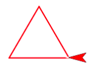
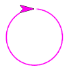
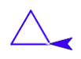

Sprite Drawing
Let's make some art! We'll see how computers can both realize and stretch our imagination.
-
Click here to load a starter project.
-
Predict: what do you think this code will do? Build and run it. What happened?

-
Click
 , and then click your script to run it again.
, and then click your script to run it again. -
Change 100 to 50, like so:
 , by clicking on the 100 and typing 50.
Click the script again to run it with the new input value.
, by clicking on the 100 and typing 50.
Click the script again to run it with the new input value. -
Click
 in the green "Pen" palette.
in the green "Pen" palette. -
Change the number in
 and run the script again... and again...
and run the script again... and again... -
Change the number in the
 and run the script again... and again...
and run the script again... and again... -
Draw a triangle with equal-length sides.
 -
Draw a circle. If you really need a hint, you can ask a teacher or mentor.
 -
Here are some other blocks you can experiment with! To change the pen's style, you must click the block to run it after you changed the number or color.


-
Let's make a more complex fractal design. Start by building a script to draw a red triangle. You can reuse your script from earlier.
-
Duplicate your script and change it to draw a smaller blue triangle. Below is a video showing how to duplicate a script: right-click on the "repeat" block to open the drop-down menu.
Right-click on Chromebooks and Macs: press or tap the touchpad with two fingers.
Chromebooks: you can also press Alt, then click with one finger.
Macs: you can also press Control (not Command!), then click with one finger.

-
Insert the entire script for the blue triangle between the move and turn blocks of the red triangle. The video below shows how.

-
Predict: what will happen when you run this script? Then, run it!
-
Can you make the picture below? If you want to go farther: try embedding one more triangle, half the size of the last (green) one, in the same way.

Credits
Content adapted chiefly from pages 1 and 4 of BJC (June 2017) U1L2 "Sprite Drawing and Interaction" and also BJC U1L3 "Modern Art".